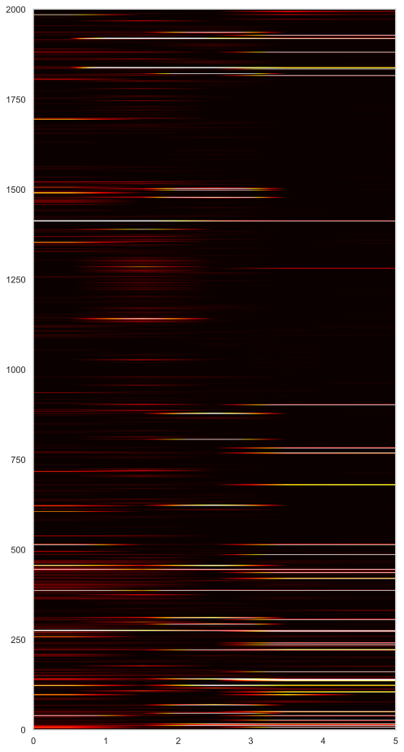

import pandas as pd
import numpy as np
import seaborn as sns
from unidecode import unidecode
import matplotlib
import matplotlib.pyplot as plt
from matplotlib.colors import ListedColormap
sns.set(style='whitegrid', rc={'figure.figsize':(16, 4)})
# I want crisp graphics, so we'll output SVG
%config InlineBackend.figure_format = 'svg'
raw = pd.read_csv('../data/raw/raw_base_junio.csv')
cas_ = pd.read_csv('https://raw.githubusercontent.com/andrab/ecuacovid/master/datos_crudos/ecuacovid.csv')COVID Data Analysis
def get_mutaciones(df):
dums = \
(df
.mutaciones
.str.replace('[()]', '', regex=True)
.str.get_dummies(sep=',')
.rename(columns=lambda c: '__' + c)
)
return pd.concat([df, dums], axis=1)
def tweak_covid(df):
return (df
.rename(columns=lambda c:unidecode(c.replace(' ', '_').lower()))
.drop(index=df[df.Edad.str.contains('months')==True].index)
.drop(columns=['gisaid_id', 'unnamed:_1', 'fecha_de_subida_a_gisaid'])
.dropna(subset=['linaje', 'clado', 'mutaciones'])
.applymap(lambda tx: unidecode(tx.title()) if isinstance(tx, str) else tx)
.pipe(get_mutaciones)
.assign(fecha_de_coleccion=lambda df_:pd.to_datetime(df_.fecha_de_coleccion),
edad=lambda df_:(df_
.edad
.replace(to_replace=['Unknown', 'M'], value=np.nan)), # neither floats nor int are nullable
virus_name_unidentified=lambda df_:(df_
.virus_name
.str.split('/', expand=True)[2]),
count_muts=lambda df_:(df_
[[c for c in df_.columns if c not in ['provincia', 'ciudad', 'tipo',
'genero', 'edad', 'linaje',
'clado', 'virus_name', 'mutaciones',
'fecha_de_coleccion', 'virus_name_unidentified']]]
.apply(lambda s: s.sum(), axis=1)),
)
.drop(columns=['virus_name', 'mutaciones'])
.set_index('fecha_de_coleccion')
)
df = tweak_covid(raw)df| provincia | ciudad | tipo | genero | edad | linaje | clado | __E_A41V | __E_L73F | __E_R61L | ... | __Spike_Y145Del | __Spike_Y145N | __Spike_Y145P | __Spike_Y145T | __Spike_Y248Del | __Spike_Y248F | __Spike_Y449N | __Spike_Y505H | virus_name_unidentified | count_muts | |
|---|---|---|---|---|---|---|---|---|---|---|---|---|---|---|---|---|---|---|---|---|---|
| fecha_de_coleccion | |||||||||||||||||||||
| 2020-03-09 | Pichincha | Quito | Hospital | Male | 57 | B.55 | L | 0 | 0 | 0 | ... | 0 | 0 | 0 | 0 | 0 | 0 | 0 | 0 | Hee-01 | 1 |
| 2020-03-30 | Pichincha | Quito | Hospital | Male | 27 | B.1.1 | Gr | 0 | 0 | 0 | ... | 0 | 0 | 0 | 0 | 0 | 0 | 0 | 0 | Hgsq-Usfq-018 | 5 |
| 2020-03-30 | Pichincha | Quito | Hospital | Male | 40 | B.1.14 | O | 0 | 0 | 0 | ... | 0 | 0 | 0 | 0 | 0 | 0 | 0 | 0 | Hgsq-Usfq-007 | 18 |
| 2020-03-30 | Pichincha | Quito | Hospital | Male | 39 | B.1.14 | O | 0 | 0 | 0 | ... | 0 | 0 | 0 | 0 | 0 | 0 | 0 | 0 | Hgsq-Usfq-010 | 18 |
| 2020-04-17 | Los Rios | Babahoyo | Hospital | Female | 50 | B.1.67 | G | 0 | 0 | 0 | ... | 0 | 0 | 0 | 0 | 0 | 0 | 0 | 0 | Usfq-020 | 2 |
| ... | ... | ... | ... | ... | ... | ... | ... | ... | ... | ... | ... | ... | ... | ... | ... | ... | ... | ... | ... | ... | ... |
| 2022-05-27 | Pichincha | Quito | Ambulatorio | Male | 42 | Ba.2 | Gra | 0 | 0 | 0 | ... | 0 | 0 | 0 | 0 | 0 | 0 | 0 | 1 | Usfq-3477 | 53 |
| 2022-05-28 | Pichincha | Quito | Ambulatorio | Male | 54 | Ba.2 | Gra | 0 | 0 | 0 | ... | 0 | 0 | 0 | 0 | 0 | 0 | 0 | 1 | Usfq-3479 | 61 |
| 2022-05-29 | Pichincha | Quito | Ambulatorio | Male | 5 | Ba.2 | Gra | 0 | 0 | 0 | ... | 0 | 0 | 0 | 0 | 0 | 0 | 0 | 1 | Usfq-3482 | 51 |
| 2022-05-25 | Pichincha | Quito | Ambulatorio | Male | 34 | Ba.2 | Gra | 0 | 0 | 0 | ... | 0 | 0 | 0 | 0 | 0 | 0 | 0 | 1 | Usfq-3483 | 47 |
| 2022-05-30 | Pichincha | Quito | Ambulatorio | Female | 67 | Ba.2.9 | Gra | 0 | 0 | 0 | ... | 0 | 0 | 0 | 0 | 0 | 0 | 0 | 1 | Usfq-3484 | 56 |
1645 rows × 2010 columns
Exploring the prevalence of variants
# Which variants have occurred more frequently
from IPython.display import display
with pd.option_context('max_rows', None):
display(
(df
.groupby(['linaje'])
.agg({'linaje':'count'})
.rename(columns={'linaje':'Relative Percentage'})
.apply(lambda s: s / s.sum())
.sort_values(by='Relative Percentage', ascending=False)
[:10]
.style
.background_gradient(axis=None, vmin=0.03, vmax=0.18, cmap='inferno')
.format(lambda x: f'{x * 100:.2f}%')
)
)| Relative Percentage | |
|---|---|
| linaje | |
| Ba.1.1 | 18.12% |
| B.1 | 11.37% |
| Ba.1.14 | 7.84% |
| B.1.1 | 6.50% |
| B.1.1.7 | 6.32% |
| Ay.122 | 5.59% |
| P.1 | 3.59% |
| B.1.621 | 3.53% |
| B.1.526 | 3.22% |
| Ay.100 | 3.10% |
The sars-cov-2 variants Ba.1.1, B.1, Ba.1.14, B.1.1, B.1.1.7 account for aproximately 50% of all sampled sars-cov-2 variants.
def plot_heat(df):
fig, ax = plt.subplots(figsize=(8, 16))
heat = ax.imshow(df,
cmap='hot',
norm='linear',
vmin=0,
vmax=1,
interpolation='bilinear',
aspect='auto',
extent=[0, df.shape[1], 0, df.shape[0]]
)
# fig.colorbar(heat)
ax.grid(False)
(df
[['linaje'] + [c for c in df.columns if '__' in c]]
.loc[df.linaje.isin(['Ba.1.1', 'B.1', 'Ba.1.14', 'B.1.1', 'B.1.1.7'])]
.melt(id_vars='linaje')
.groupby(['linaje', 'variable'])
.agg('sum')
.unstack(level=0)
.apply(lambda s: (s / s.sum()) * 100, axis=0)
.pipe(plot_heat)
)
plt.imshow?Signature: plt.imshow( X, cmap=None, norm=None, *, aspect=None, interpolation=None, alpha=None, vmin=None, vmax=None, origin=None, extent=None, interpolation_stage=None, filternorm=True, filterrad=4.0, resample=None, url=None, data=None, **kwargs, ) Docstring: Display data as an image, i.e., on a 2D regular raster. The input may either be actual RGB(A) data, or 2D scalar data, which will be rendered as a pseudocolor image. For displaying a grayscale image set up the colormapping using the parameters ``cmap='gray', vmin=0, vmax=255``. The number of pixels used to render an image is set by the Axes size and the *dpi* of the figure. This can lead to aliasing artifacts when the image is resampled because the displayed image size will usually not match the size of *X* (see :doc:`/gallery/images_contours_and_fields/image_antialiasing`). The resampling can be controlled via the *interpolation* parameter and/or :rc:`image.interpolation`. Parameters ---------- X : array-like or PIL image The image data. Supported array shapes are: - (M, N): an image with scalar data. The values are mapped to colors using normalization and a colormap. See parameters *norm*, *cmap*, *vmin*, *vmax*. - (M, N, 3): an image with RGB values (0-1 float or 0-255 int). - (M, N, 4): an image with RGBA values (0-1 float or 0-255 int), i.e. including transparency. The first two dimensions (M, N) define the rows and columns of the image. Out-of-range RGB(A) values are clipped. cmap : str or `~matplotlib.colors.Colormap`, default: :rc:`image.cmap` The Colormap instance or registered colormap name used to map scalar data to colors. This parameter is ignored if *X* is RGB(A). norm : str or `~matplotlib.colors.Normalize`, optional The normalization method used to scale scalar data to the [0, 1] range before mapping to colors using *cmap*. By default, a linear scaling is used, mapping the lowest value to 0 and the highest to 1. If given, this can be one of the following: - An instance of `.Normalize` or one of its subclasses (see :doc:`/tutorials/colors/colormapnorms`). - A scale name, i.e. one of "linear", "log", "symlog", "logit", etc. For a list of available scales, call `matplotlib.scale.get_scale_names()`. In that case, a suitable `.Normalize` subclass is dynamically generated and instantiated. This parameter is ignored if *X* is RGB(A). vmin, vmax : float, optional When using scalar data and no explicit *norm*, *vmin* and *vmax* define the data range that the colormap covers. By default, the colormap covers the complete value range of the supplied data. It is an error to use *vmin*/*vmax* when a *norm* instance is given (but using a `str` *norm* name together with *vmin*/*vmax* is acceptable). This parameter is ignored if *X* is RGB(A). aspect : {'equal', 'auto'} or float, default: :rc:`image.aspect` The aspect ratio of the Axes. This parameter is particularly relevant for images since it determines whether data pixels are square. This parameter is a shortcut for explicitly calling `.Axes.set_aspect`. See there for further details. - 'equal': Ensures an aspect ratio of 1. Pixels will be square (unless pixel sizes are explicitly made non-square in data coordinates using *extent*). - 'auto': The Axes is kept fixed and the aspect is adjusted so that the data fit in the Axes. In general, this will result in non-square pixels. interpolation : str, default: :rc:`image.interpolation` The interpolation method used. Supported values are 'none', 'antialiased', 'nearest', 'bilinear', 'bicubic', 'spline16', 'spline36', 'hanning', 'hamming', 'hermite', 'kaiser', 'quadric', 'catrom', 'gaussian', 'bessel', 'mitchell', 'sinc', 'lanczos', 'blackman'. If *interpolation* is 'none', then no interpolation is performed on the Agg, ps, pdf and svg backends. Other backends will fall back to 'nearest'. Note that most SVG renderers perform interpolation at rendering and that the default interpolation method they implement may differ. If *interpolation* is the default 'antialiased', then 'nearest' interpolation is used if the image is upsampled by more than a factor of three (i.e. the number of display pixels is at least three times the size of the data array). If the upsampling rate is smaller than 3, or the image is downsampled, then 'hanning' interpolation is used to act as an anti-aliasing filter, unless the image happens to be upsampled by exactly a factor of two or one. See :doc:`/gallery/images_contours_and_fields/interpolation_methods` for an overview of the supported interpolation methods, and :doc:`/gallery/images_contours_and_fields/image_antialiasing` for a discussion of image antialiasing. Some interpolation methods require an additional radius parameter, which can be set by *filterrad*. Additionally, the antigrain image resize filter is controlled by the parameter *filternorm*. interpolation_stage : {'data', 'rgba'}, default: 'data' If 'data', interpolation is carried out on the data provided by the user. If 'rgba', the interpolation is carried out after the colormapping has been applied (visual interpolation). alpha : float or array-like, optional The alpha blending value, between 0 (transparent) and 1 (opaque). If *alpha* is an array, the alpha blending values are applied pixel by pixel, and *alpha* must have the same shape as *X*. origin : {'upper', 'lower'}, default: :rc:`image.origin` Place the [0, 0] index of the array in the upper left or lower left corner of the Axes. The convention (the default) 'upper' is typically used for matrices and images. Note that the vertical axis points upward for 'lower' but downward for 'upper'. See the :doc:`/tutorials/intermediate/imshow_extent` tutorial for examples and a more detailed description. extent : floats (left, right, bottom, top), optional The bounding box in data coordinates that the image will fill. These values may be unitful and match the units of the Axes. The image is stretched individually along x and y to fill the box. The default extent is determined by the following conditions. Pixels have unit size in data coordinates. Their centers are on integer coordinates, and their center coordinates range from 0 to columns-1 horizontally and from 0 to rows-1 vertically. Note that the direction of the vertical axis and thus the default values for top and bottom depend on *origin*: - For ``origin == 'upper'`` the default is ``(-0.5, numcols-0.5, numrows-0.5, -0.5)``. - For ``origin == 'lower'`` the default is ``(-0.5, numcols-0.5, -0.5, numrows-0.5)``. See the :doc:`/tutorials/intermediate/imshow_extent` tutorial for examples and a more detailed description. filternorm : bool, default: True A parameter for the antigrain image resize filter (see the antigrain documentation). If *filternorm* is set, the filter normalizes integer values and corrects the rounding errors. It doesn't do anything with the source floating point values, it corrects only integers according to the rule of 1.0 which means that any sum of pixel weights must be equal to 1.0. So, the filter function must produce a graph of the proper shape. filterrad : float > 0, default: 4.0 The filter radius for filters that have a radius parameter, i.e. when interpolation is one of: 'sinc', 'lanczos' or 'blackman'. resample : bool, default: :rc:`image.resample` When *True*, use a full resampling method. When *False*, only resample when the output image is larger than the input image. url : str, optional Set the url of the created `.AxesImage`. See `.Artist.set_url`. Returns ------- `~matplotlib.image.AxesImage` Other Parameters ---------------- data : indexable object, optional If given, all parameters also accept a string ``s``, which is interpreted as ``data[s]`` (unless this raises an exception). **kwargs : `~matplotlib.artist.Artist` properties These parameters are passed on to the constructor of the `.AxesImage` artist. See Also -------- matshow : Plot a matrix or an array as an image. Notes ----- Unless *extent* is used, pixel centers will be located at integer coordinates. In other words: the origin will coincide with the center of pixel (0, 0). There are two common representations for RGB images with an alpha channel: - Straight (unassociated) alpha: R, G, and B channels represent the color of the pixel, disregarding its opacity. - Premultiplied (associated) alpha: R, G, and B channels represent the color of the pixel, adjusted for its opacity by multiplication. `~matplotlib.pyplot.imshow` expects RGB images adopting the straight (unassociated) alpha representation. File: c:\users\elias\anaconda3\lib\site-packages\matplotlib\pyplot.py Type: function
import matplotlib
matplotlib.scale.get_scale_names()['asinh', 'function', 'functionlog', 'linear', 'log', 'logit', 'symlog']plt.imshow(rand_data, cmap='hot', interpolation='nearest')
plt.colorbar()<matplotlib.colorbar.Colorbar at 0x218a4d27d90>Exploring Infection Waves
cas_ = \
(cas_
.assign(created_at=pd.to_datetime(cas_.created_at, dayfirst=True))
.set_index('created_at')
)def remove_nonpositive(df):
return df[df.ge(0)]
ticks_ = pd.date_range(start = '2020/03/13', end = '2022/09/12', freq = 'q')
axes = \
(cas_
[['muertes_nuevas', 'positivas_pcr_nuevas']]
.pipe(remove_nonpositive)
.resample('2w')
.sum()
.plot(
subplots=True,
figsize=(12, 6),
xlabel='',
xticks=ticks_
)
)
for ax, label in zip(axes, ['Nuevas Muertes', 'Nuevos Positivos']):
ax.set_xticklabels(ticks_.format(date_format='%Y/%m'))
ax.grid(False)
ax.legend([label])
for spine in ['top', 'right']:
ax.spines[spine].set_visible(False)The first wave appears to have taken place between April and May of 2020. From the graph, it seems to have been particularly deadly as it presents the second major peak in deaths. It may be due to the fact that not testing was not widespread. The second wave may be place in the first quarter of 2021. In either July or August the number of deaths increases to a suspicous high. Finally, around the first quarter of 2022 there is a new high in cases. After that point cases present another peak but without impacting the death toll.
Exploring the lineages that caused the waves
(df
.loc['2020/03':'2020/06']
.groupby(['linaje'])
.agg({'linaje':'count'})
.rename(columns={'linaje':'Relative Percentage'})
.apply(lambda s: s / s.sum())
.sort_values(by = 'Relative Percentage', ascending=False)
[:5]
.style
.set_caption('(Mar-Jun 2020)')
.background_gradient(axis=None, vmin=0.02, vmax=0.20, cmap='inferno')
.format(lambda x: f'{x * 100:.2f}%')
)C:\Users\Elias\AppData\Local\Temp\ipykernel_28576\290477614.py:1: FutureWarning: Value based partial slicing on non-monotonic DatetimeIndexes with non-existing keys is deprecated and will raise a KeyError in a future Version.
(df| Relative Percentage | |
|---|---|
| linaje | |
| B.1.1 | 45.71% |
| B.1 | 17.14% |
| B.1.67 | 14.29% |
| B.1.14 | 5.71% |
| B.1.1.1 | 2.86% |
(df
.loc['2021/01':'2021/04']
.groupby(['linaje'])
.agg({'linaje':'count'})
.rename(columns={'linaje':'Relative Percentage'})
.apply(lambda s: s / s.sum())
.sort_values(by='Relative Percentage', ascending=False)
[:5]
.style
.set_caption('(Jan-Apr 2021)')
.background_gradient(axis=None, vmin=0.06, vmax=0.22, cmap='inferno')
.format(lambda x: f'{x * 100:.2f}%')
)| Relative Percentage | |
|---|---|
| linaje | |
| B.1.1.7 | 22.41% |
| B.1.1 | 17.24% |
| B.1.526 | 13.22% |
| B | 6.90% |
| B.1 | 6.32% |
(df
.loc['2021/12':'2022/03']
.groupby(['linaje'])
.agg({'linaje':'count'})
.rename(columns={'linaje':'Relative Percentage'})
.apply(lambda s: s / s.sum())
.sort_values(by='Relative Percentage', ascending=False)
[:5]
.style
.set_caption('(Dic 21-Mar 2022)')
.background_gradient(axis=None, vmin=0.3, vmax=0.43, cmap='inferno')
.format(lambda x: f'{x * 100:.2f}%')
)| Relative Percentage | |
|---|---|
| linaje | |
| Ba.1.1 | 42.21% |
| Ba.1.14 | 19.36% |
| Ba.1 | 4.54% |
| Ay.100 | 4.54% |
| Ay.122 | 3.93% |
Anomalies
# On June 5th 2020, for the column `positivas_pcr_nuevas`
# there is a negative value
(cas_
.loc['2020/05/06']
['positivas_pcr_nuevas']
)-2498(cas_
.loc['2020/05/08']
['positivas_pcr_nuevas']
)-1480